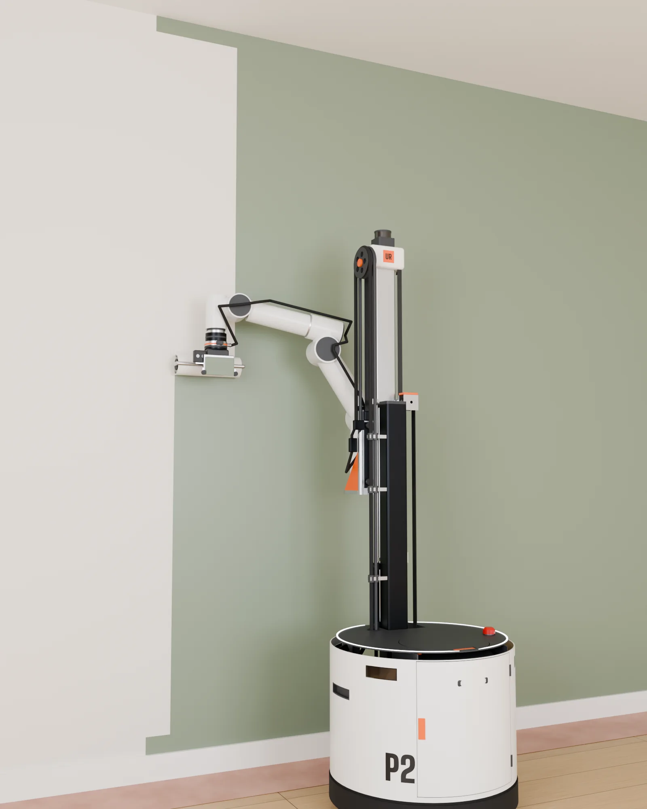
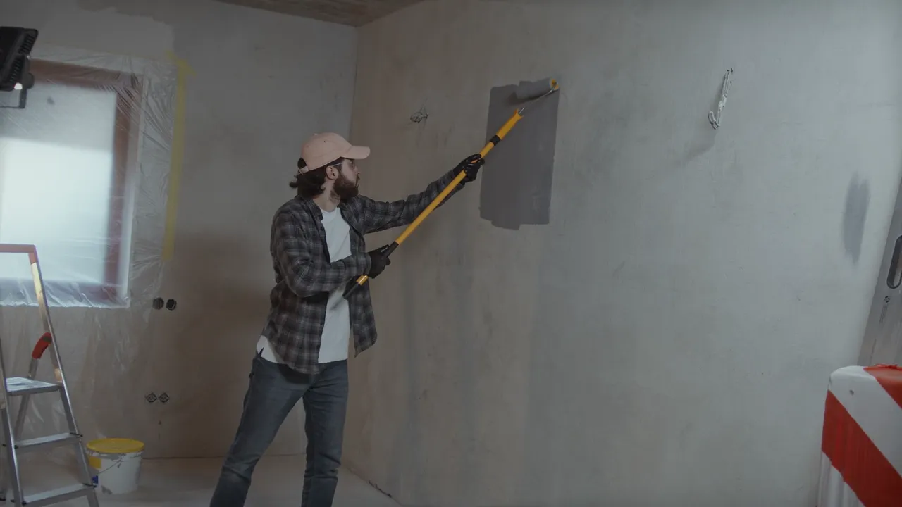
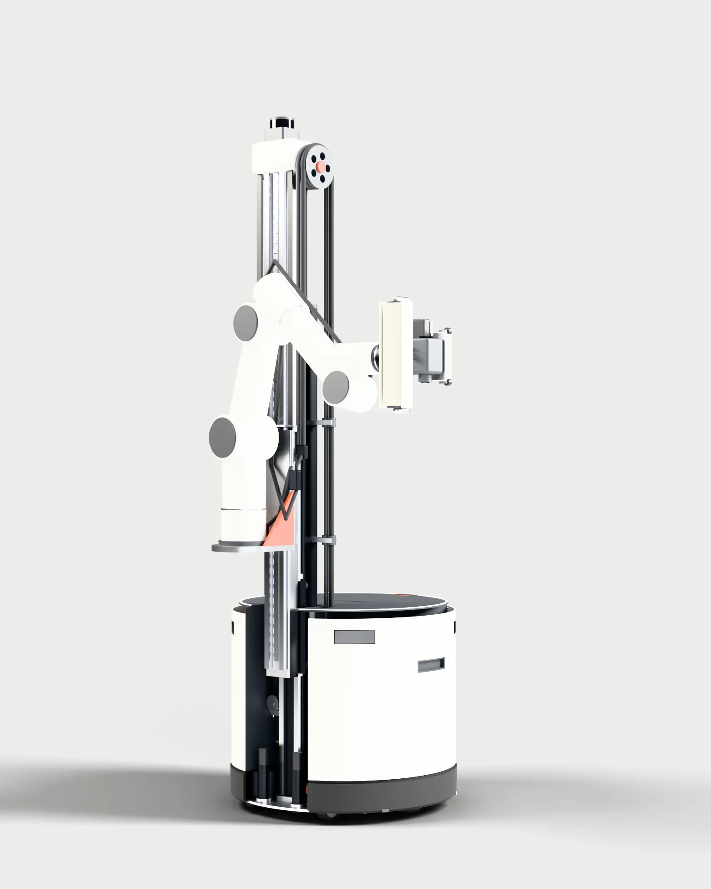
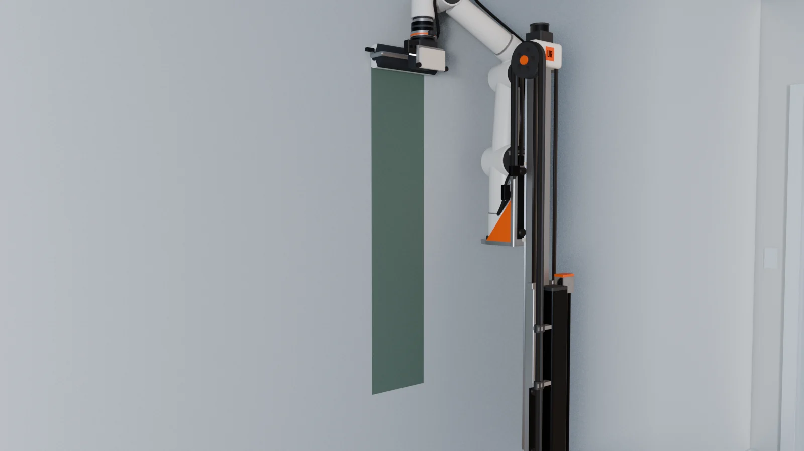
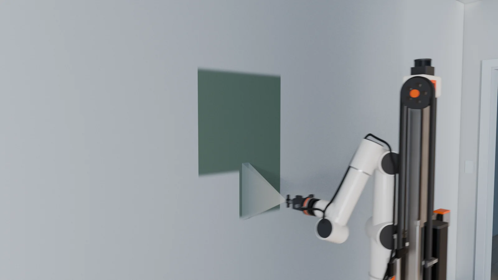
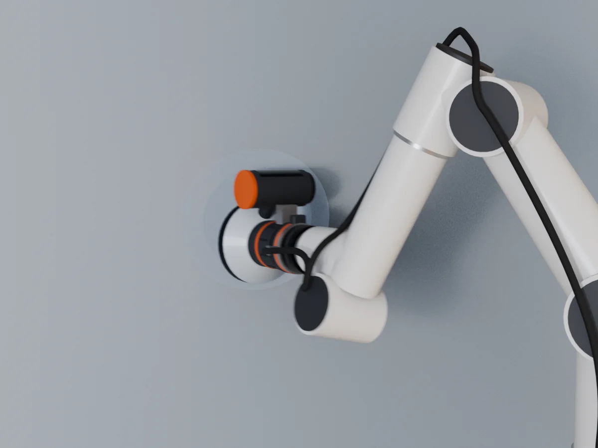
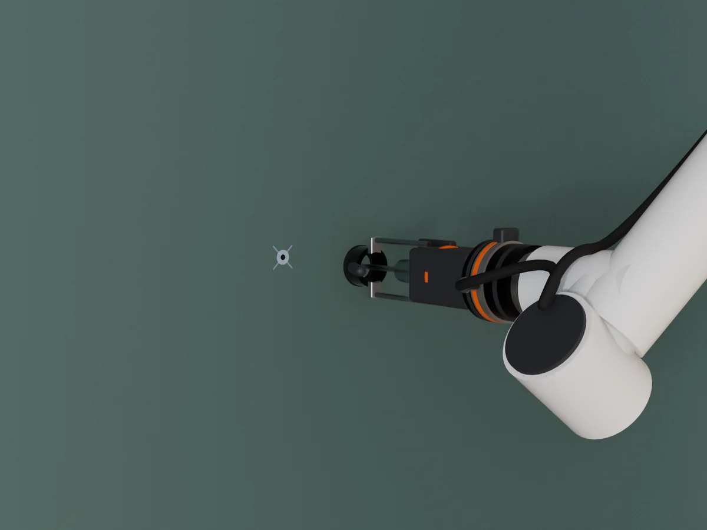
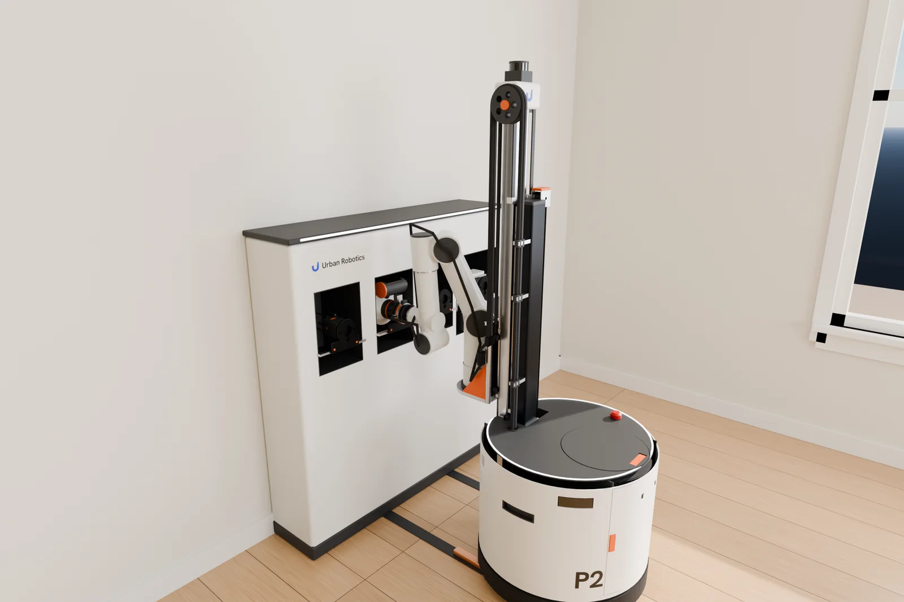

Interior
painting
robot
A painted room without a crew in your house all day. You move the furniture and tape the trim; P2 is designed to paint the walls and ceiling on its own, in about five hours, drying included.
P2 is in development in Miami. Paint is its first tool; Spray, Sand and Drill are planned for the same Tool Port.

P2 at work
A 41 second film of a job, animated from the CAD model and the arm’s real joint limits: P2 rolls in, cuts the ceiling line, rolls the wall lane by lane, and swaps its own tools at the dock. Sound on.
Why P2
Most of what you pay for a paint job is labor: 75 to 95 percent of a professional interior job, according to Angi. P2 is built to take that labor off the bill.

of a person’s time to paint a 12 by 12 ft bedroom with P2, taping included, against about 6.5 hours for a painter by hand. Both are our estimates.
- Lower cost
- P2 does the slow part of the job, the rolling and the cutting in. Our goal is a price per room below what a painting crew charges.
- Done the same day
- The walls in two coats and the ceiling in one, in about five hours from start to finish, drying included.
- Less mess
- A roller puts no mist in the air, so nothing is wrapped in plastic. Move the furniture 1 m from the walls, tape the trim as a painter would, and P2 paints around the room.
- No trips to the tray
- A pump feeds paint through the roller core from a sealed 6 gal tank, the same idea as the power rollers painters already use. One tank holds enough for about two bedrooms.
- On your schedule
- No crew to book or wait for. P2 is designed to work on its own, nights and weekends included, and to message you if it needs help.
- Nobody on a ladder
- The mast lifts the roller to a 9 ft ceiling. Falls from ladders are among the common hazards of the trade.
For painting contractors and property managers: painters are hard to hire, with about 24,900 openings a year in the U.S. through 2035. P2 is designed to roll and cut while your painters prep the next room, so the same crew can finish more rooms.
Sources: NerdWallet, Cost to Paint a House in 2026, citing Angi; U.S. Bureau of Labor Statistics, Occupational Outlook Handbook, Painters; Bob Vila, review of a Wagner power roller. Times and paint use for P2 come from our simulation; P2 is in development.
How it works
Prep
Move the furniture about 1 m away from the walls, tape the trim and the ceiling line the way a painter would, lay the paper runner along the walls, and pour the paint into P2’s sealed tank.
Scan
P2 maps the room with its LiDAR and cameras and finds the walls, trim, outlets, doors and windows. If something is still against a wall, it asks before it starts.
Cut and roll
At each spot along the wall, P2 lowers two feet, cuts the ceiling line, the baseboard line, the corners and the trim with an edger pad on guide wheels, then rolls the wall in lanes from floor to ceiling. Its camera checks each panel before it moves on.
Dry and finish
Between coats P2 waits in its dock, charging, with the roller in a wet box. After the last coat it rinses its paint line and parks. You pull the tape and put the furniture back.
- Cut the edges
- Roll the lanes
- Move on
This is how P2 is designed to work. In our simulation of a 12 by 12 ft bedroom with an 8 ft ceiling, P2 needs 2.6 hours of work and 5.1 hours from start to finish, including two hours of drying between coats.
A round base, a two stage mast and a six axis arm. The base carries the paint, the pump and the battery; the mast lifts the arm; the arm holds the tool.
- Wall reach From the baseboard to a 9 ft ceiling
- 9 ft
- Height, stowed Fits under a standard 80 inch door
- 1.48 m
- A bedroom, two coats A 12 by 12 ft room in our simulation, start to finish
- 5.1 h

- LiDAR. Maps the room and finds walls, doors, trim and furniture.
- Two stage mast. Lifts the arm so the roller reaches from the baseboard to a 9 ft ceiling.
- Six axis arm. A collaborative arm with 0.7 m of reach and a force sensor at the wrist.
- Tool Port. Locks the tool with spring loaded balls that stay locked without power.
- Paint tool. A standard 9 in roller fed through its core, and an edger pad for the lines.
- Base. Carries a sealed 6 gal paint tank, the pump, the battery and two stabilizer feet.
Specs
Fits through any door
To travel, P2 lowers its mast and folds its arm against it. Stowed, it is 1.48 m tall, 0.68 m wide and 0.78 m long, so it fits under a standard 80 inch door and through a 30 inch doorway. At the wall, the mast lifts the arm until the roller reaches a 9 ft ceiling.
Design targets
- Footprint
- 600 mm round base
- Height, stowed
- 1.48 m, under any standard door
- Wall reach
- Baseboard to a 9 ft (2.74 m) ceiling
- Weight
- About 110 kg empty, 132 kg with a full tank
- Arm
- Six axis collaborative arm, 0.7 m reach
- Paint
- Sealed 6 gal tank, peristaltic pump, paint fed roller
- Tools
- Paint first; Spray, Sand and Drill planned
- Power
- 51 V LiFePO4 battery, 0.9 kWh, charges at its dock
- Sensing
- LiDAR, depth cameras, wrist force sensor, color sensor
Numbers come from the current CAD model. The prototype has not been built yet, and these numbers will change as we test it.
Built for paint and repair
- Standard wear parts
- The roller cover, the edger pad and the pump hose are stock parts that anyone can replace.
- Locks that hold without power
- The Tool Port keeps its tool and the lift brakes hold the mast when the power is off.
- Made for paint
- The mast runs on V wheels with felt wipers instead of ball rails. Paint only touches the sealed tank, the hose and the tool.
- Modules, not one block
- The mast comes off the base with one lever, and every tool shares one port.
- Failure modes first
- We listed 43 ways P2 could fail, from a drip to a drill hitting a wire, and gave each one a design answer and a test.
One arm, four tools
One machine for more of the job. The tool on the arm decides what P2 does, and P2 swaps tools on its own at the dock. Paint comes first. Spray, Sand and Drill are planned for the same Tool Port: spray for empty rooms and new builds, sand for patches between coats, and drill for anchors where you mark them, for shelves, TVs and curtain rods. They are designed, not built yet. Pick a tool to see it work.




Every tool starts with the same tool plate. Six spring loaded balls lock it to the Tool Port and stay locked when power is off; a solenoid opens them only when the tool sits in its bay at the dock. Two dowels locate the tool, eight pins carry power and data, and a flat face coupling passes paint without a drip.
P2 Dock
P2 backs in over two contact rails and charges through two pads under its base. The arm reaches the four tool bays behind it, sets one tool into its saddle, lets go, and picks up the next.
The paint bay has a wet box. Between coats the roller hangs inside it, so the cover stays wet for the next coat.

Safety
- P2 is designed to pause when a person or pet comes close. Its cameras watch the work area, the arm slows and stops near people, and the arm itself is force limited.
- Two stabilizer feet go down before the mast rises. In the worst case we simulated, an empty tank with the arm stopped dead at full reach and the mast at the top, P2 still keeps 82 mm of tip margin.
- An emergency stop on the robot and in the app cuts motor power through a hardwired safety relay.
- P2 uses water based paints only. Open a window while it works.
- P2 does not sand or scrape in its first version. In homes built before 1978, work that disturbs old paint must follow the EPA lead safe rules.
- P2 uses its cameras to navigate and to check the paint. Before a pilot, we agree with you on what is recorded and when it is deleted.
- P2 is in development and has no safety certification. During pilots, our team will stay on site.
Progress
Finished the CAD design of P2 and its four tools. Simulated a full room: a 12 by 12 ft bedroom takes 2.6 hours of work and 5.1 hours from start to finish. Checked reach and stability: in the worst case P2 keeps 82 mm of tip margin. Listed 43 failure modes, each with a design answer and a test. Animated a job from the CAD and the arm’s kinematics.
Before that
Designed P1, a spray robot for commercial interiors. Its base and mast work carried into P2.
Next
Build a bench rig with the arm, the Tool Port and the paint tool, and paint test walls to measure drips, lap marks and cut lines.
After that
Build the full robot, then run pilot jobs in homes and apartments in South Florida.
Company
Urban Robotics is building robots for the finishing trades, starting with paint. We are based in Miami. The company was founded by Onat Cakici, an aerospace engineer. We design P2 in house, from standard parts.
About the company and its founder
Investors and press: write to info@urbanrobotics.com.
Questions
- Who is it for?
- Homeowners who want a room painted without a crew in the house all day, property managers who repaint units between tenants, and painting contractors who need more hands.
- What will it cost?
- We have not set a price, and P2 is not for sale yet. Our goal is a price per room below what a painting crew charges. A home is repainted every few years, so for homes we expect to offer P2 as a service or a rental rather than a machine to buy.
- When can I use it?
- Not yet. Next we build a bench rig to test the paint tool on real walls, then the full robot, then pilot jobs in South Florida.
- What do I do before it starts?
- Move the furniture about 1 m away from the walls, take down pictures and outlet covers, tape the trim and the ceiling line, and pour the paint into its tank.
- What paint does it use?
- Water based interior paint, the same cans a painter buys.
- Does someone need to be there?
- During pilots, yes: our team stays on site. P2 is designed to work on its own and to ask for help on your phone when it needs it.
- How high can it reach?
- The first version paints rooms up to 9 ft. Ten foot rooms are a later goal; the current design reaches them only in part.
Talk to us
Repaint rooms often? Help us shape the first pilots. We are looking for homeowners, property managers and painting contractors in South Florida. It starts with a 15 minute call about how you repaint today: what it costs, how long it takes and what slows it down. Nothing is for sale yet.
Write to info@urbanrobotics.com. This site has no forms, cookies or tracking.